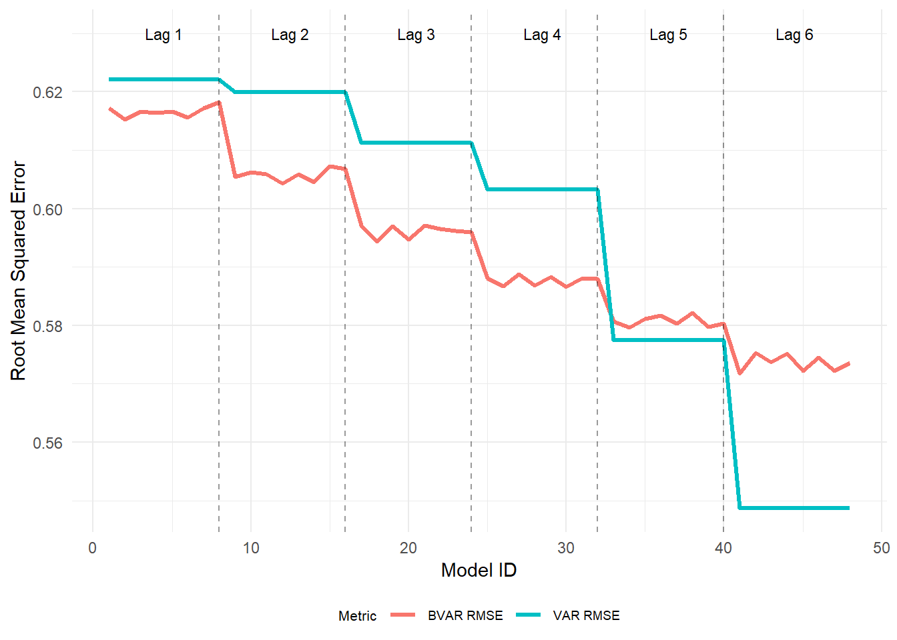

| Ticker | Name | Country | Mkt Cap | GWP |
|---|---|---|---|---|
| 003690.KS | Korean Reinsurance Co | South Korea | 1.34 | 5.39 |
| 0966.HK | Taiping Reinsurance Co. Ltd. | Hong Kong | 6.92 | 1.11 |
| 1508.HK | China Reinsurance (Group) Corp | China | 8.53 | 7.85 |
| 6809.T | The Toa Reinsurance Co, Limited | Japan | 0.25 | 2.30 |
| 8630.T | Sompo International Holdings, Ltd. | Japan | 26.68 | 26.83 |
| 8725.T | MS&AD Insurance Group Holdings, Inc. | Japan | 32.04 | 35.34 |
| 8766.T | Tokio Marine & Nichido Fire Insurance Co., Ltd. | Japan | 76.77 | 36.30 |
| ACGL | Arch Capital Group Ltd. | Bermuda | 33.25 | 11.11 |
| AXS | AXIS Capital Holdings Limited | Bermuda | 7.34 | 2.39 |
| BRK-A | Berkshire Hathaway Inc. | US | 1070.25 | 88.69 |
| CB | Chubb Limited | Switzerland | 112.18 | 62.00 |
| CS.PA | AXA XL | France | 74.46 | 8.41 |
| EG | Everest Group, Ltd. | Bermuda | 14.72 | 12.94 |
| FFH.TO | Allied World Assurance Co Holdings, Ltd. | Canada | 38.91 | 7.20 |
| G.MI | Assicurazioni Generali SpA | Italy | 43.37 | 81.84 |
| HNR1.DE | Hannover Rück SE | Germany | 26.60 | 22.68 |
| HSX.L | Hiscox Ltd | Bermuda | 3.43 | 1.03 |
| MAP.MC | MAPFRE RE, Compañía de Reaseguros S.A. | Spain | 10.77 | 6.72 |
| MKL | Markel Corp | US | 24.30 | 1.15 |
| MUV2.DE | Munich Reinsurance Company | Germany | 62.00 | 34.42 |
| QBE.AX | QBE Insurance Group Limited | Australia | 47.59 | 22.40 |
| RGA | Reinsurance Group of America Inc. | US | 12.81 | 18.49 |
| RNR | RenaissanceRe Holdings Ltd. | Bermuda | 12.04 | 11.73 |
| SCR.PA | SCOR S.E. | France | 4.63 | 17.25 |
| SPNT | SiriusPoint Ltd. | Bermuda | 2.09 | 1.34 |
| SREN.SW | Swiss Re Ltd. | Switzerland | 54.45 | 44.86 |
| WRB | W.R. Berkley Corp | US | 28.89 | 1.55 |
2 Methodology and Data
2.1 Methodology
As discussed before, the reinsurance industry is founded on the principle of ri sk sharing among market participants. While this mechanism provides various benefits, as stated in Chapter 1, it also introduces interdependencies among participants that could spread financial distress, creating substantial systemic risk. Financial networks are frequently analyzed and subject to research, especially after the subprime mortgage crisis of 2008, although the existence of systemic risk arising from interconnection is still debated, especially for insurance and the reinsurance sector. The goal of this research is to construct a network based on forecast error variance decomposition to quantify risk spillovers, and assess the stability of the system and identify the presence of systemic risk in the industry.
The research initially developed by selecting possible internationally influential reinsurance companies and collecting market price data during the analysis period. Yang-Zhang volatility was then calculated on the retrieved data. A statistical BVAR model was chosen, after comparing it with frequentist analogous VAR models, and the connectivity measure deriving from the generalized forecast error variance decomposition is calculated, to later construct and analyze the network. The methodology used and the empirical results are reported in this chapter.
2.2 Data
he original dataset of reinsurance companies considered consists of the top 50 global reinsurance groups for the year 2024 according to the rating agency A.M. Best1. The dataset includes only publicly listed companies with available trading data on Yahoo Finance for the last 10 years, with prices considered from January 2015 to March 2025. Table 2.1 shows the reinsurers considered for the network construction, the Country in which they are established, and the gross written premiums (GWP)2 expressed in million USD. Of the 27 companies composing our dataset, 6 are set in the American continent (4 in the US, 1 in Canada), 6 are set in Bermuda, 8 in Europe, 7 in Asia, and 1 in Australia, ensuring to capture various markets’ dynamics.
2.2.1 Sample Selection and Limitations
The construction of the dataset follows a selection process starting from the A.M. Best ranking of the top 50 global reinsurance groups by net reinsurance premiums written for the year 2024. From this initial ranking, only companies that satisfied two criteria were retained: (i) they are publicly listed on a stock exchange, and (ii) continuously daily trading data are available on Yahoo Finance for the period October 2015 to March 2025. Of the original 50 groups, 23 were excluded. Of the 23 companies excluded, 15 are not listed or private companies, 5 are listed companies but their trading data are available for a period shorter than the required one, one was delisted as it was acquired by another financial company, and two were removed as their ticker did not purely represent the reinsurance sector. Detailed information of the excluded companies is reported in Table A.2 in Section A.1
2.2.1.1 Market Coverage
The 27 retained companies account for an aggregate gross written premium (GWP) of $573.32 billion. According to International Association of Insurance Supervisors (2025), written global life and non-life reinsurance premiums amounted to approximately $1.75 trillion for the year 2024, making the sample representative for one third of the whole market volume. In addition, A.M. Best estimated GWP was $265 billion. The difference with the values reported in Table 2.1 mainly comes from the fact that these data represent group-level gross written premiums, which include substantial primary insurance operations for several conglomerates. Their inclusion is justified as their reinsurance divisions are ranked within the A.M. Best top 50, and that group-level stock prices - which are the input to our volatility estimation - reflect the market’s assessment of the entire group, including its reinsurance exposure. This is consistent with the approach of Billio et al. (2012), who use publicly traded equity prices to measure systemic interconnectedness, and with the Diebold-Yilmaz framework (Diebold and Yılmaz (2014)), which relies on market-observable proxies rather than balance-sheet data.
2.2.1.2 Survivorship bias
A limitation of this sample construction is survivorship bias. The dataset inherently excludes firms that were active during the sample period considered but subsequently exited the market, either through insolvency, merger, or delisting. Such firms may also constitute the most relevant cases for the study of systemic risk, as financial distress and corporate failure are manifestations of the intrinsic systemic risk of the industry. Notable exclusions include XL Group (acquired by AXA in 2018, partially captured through CS.PA post-acquisition) and PartnerRe (delisted in 2015 following acquisition by EXOR). The use of a survivor-conditioned sample may therefore lead to an underestimation of tail-risk spillovers and an overly benign view of network stability during crisis periods.
2.2.1.3 Data quality consideration
The use of Yahoo Finance as the data source introduces additional considerations. Stock prices across the 27 companies are quoted on 8 different exchanges and spanning multiple time zones. To address non-synchronous trading, only trading days on which all exchanges were open simultaneously are retained, reducing the sample from approximately 2,500 potential trading days to 1,989 common trading days. While this approach eliminates stale-price contamination, it discards information from days when only specific markets experience significant price movements. Furthermore, Yahoo Finance data may not consistently account for corporate actions (stock splits, special dividends) across all exchanges, although the use of adjusted closing prices and log-transformation applied during volatility estimation mitigate the impact of level shifts.
2.2.1.4 Volatility estimation
Volatility is a crucial element for the estimation of the network and the subsequent findings about spillovers effects in the system. The volatility estimator used in this framework is the one developed by Yang and Zhang (Yang and Zhang (2000)), in which an unbiased estimator based on multiple periods of open, close, high and low prices is used. It is assumed that price movements can be modeled as a geometric Brownian motion with undetermined parameters, volatility \(\sigma\) and drift \(\mu\). The estimator is shown to be the minimum-variance unbiased variance estimator, also being independent of the drift motion \(\mu\), and from the opening price jumps, due to the multi period consideration. The formula for the Yang-Zhang variance is defined as: \[ V_{YZ} = V_o + kV_c + (1-k)V_{RS} \tag{2.1}\] where \(k\) is a parameter defined as \(k=\frac{0.34}{1.34+\frac{n+1}{n-1}}\). Letting \(O_i\), \(C_i\), \(H_i\),\(L_i\) be the opening, closing, high, and low of the period considered, the formula can be further decomposed to its core components: the term \(V_o\) is the overnight variance, defined as: \[ V_o = \frac{1}{n-1}\sum^n_{i=1}(o_i - \bar{o})^2 \] in which \(\bar{o}=\frac{1}{n-1}\sum_{i=1}^no_i\) and \(o_i=ln(O_i)-ln(C_{i-1})\) is the normalized open price, to account for jumps in the stock quotations, otherwise not considered. The second term of the Yang-Zhang variance is the open-to-close volatility, \(V_c\), used to account for intra-day price variations: \[ V_c = \frac{1}{n-1}\sum_{i=1}^n(c_i - \bar{c})^2 \] where \(\bar{c} = \frac{1}{n-1}\sum_{i=1}^nc_i\) and \(c_i = ln(C_i)-ln(O_i)\) is the normalized closing price. The latter element to calculate the variance estimator is the Rogers-Satchell variance \(V_{RS}\) that gives independence of the estimator from the drift component. It is computed as: \[ V_{RS} = \frac{1}{n}\sum_{i=1}^n[u_i(u_i - c_i) + d_i(d_i - c_i)] \] where \(u_i = ln(H_i)-ln(O_i)\) and \(d_i = ln(L_i)-ln(O_i)\) are respectively the normalized high and the normalized low of the trading day. The period used to calculate the estimator was 21 days (approximately one month of data). To normalize the results, the log transformation was applied to the resulting variance (\(V_{YZ}\)) to ensure the absence of unit-roots.
The use of this estimator, instead of the more common close-to-close volatility measure, is mainly driven by the fact that the Yang-Zhang estimator preserves the beneficial properties of the original estimator, but at the same time it increases efficiency, allowing for more accurate estimation with less data, and decrease the dependency of the drift component which could significantly impact volatility estimations. In addition, \(V_{YZ}\) reflects volatility drops that occur when a stock undergoes a steady one direction movement, known as trendy phase. The volatility dataset was then used to estimate a Bayesian Vector autoregressive model, as discussed in the following section. However, while the Yang-Zhang estimator achieves minimum variance under geometric Brownian motion, reinsurance equities frequently exhibit jump-diffusion behavior due to sudden catastrophe loss announcements. Consequently, the Yang-Zhang estimator serves here as a robust, drift-independent baseline proxy for underlying variance, rather than a perfect measure of continuous-path volatility.
2.2.1.5 Stationarity test
Before proceeding with the BVAR estimation, the stationarity of the log-volatility series was assessed using the Augmented Dickey-Fuller (ADF) test (Dickey and Fuller (1979)), in which the null hypothesis is the presence of a unit-root, and the Kwiatkowski-Phillips-Schmidt-Shin (KPSS) test (Kwiatkowski et al. (1992)), where the null hypothesis is level-stationarity.
Table A.3 in the Section A.2 reports the results for all the 27 log-volatility series. The ADF test rejects the unit-root null hypothesis at the 5% significance level for all the series, confirming the absence of I(1) behavior, while the KPSS test fails to reject level-stationarity at 5% significance level for only one of the 27 series. This implies that the stationarity of the series is ambiguous, due to the failed level-stationarity test. This pattern is consistent with the long-memory properties of financial volatility (Andersen et al. (2003)), where slowly decaying autocorrelations cause the KPSS test to over-reject even in absence of unit roots. We point out that strict level-stationarity is not a necessary condition for VAR estimation, as the critical requirement is the absence of unit roots. Furthermore, the BVAR specification already accommodates near-unit-root behavior through the Sum-of-Coefficients (SOC) and Single-unit-root (SUR) dummy priors, which shrink the model towards unit-root compatible dynamics without requiring strict stationarity of the input series (Sims (1993), Giannone, Lenza, and Primiceri (2015))
2.3 BVAR
Vector autoregressive (VAR) models are flexible time series models widely used in macroeconomics and finance to analyze the interrelationships among multiple variables. However, as the number of endogenous variables increases, the number of parameters in an unrestricted VAR increases quadratically, often leading to overfitting, unstable inference, and faulty out-of-sample forecasts. Bayesian VAR (BVAR) models address this issue by introducing prior distribution that shrink the unrestricted model toward a more parsimonious specification, improving estimation stability and predictive accuracy (Litterman (1986), Bańbura, Giannone, and Reichlin (2010), Giannone, Lenza, and Primiceri (2015)).
A VAR model of finite order \(p\), in its standard form, can be expressed as: \[ y_t = a_0 + A_1y_{t-1}+...+A_py_{t-p} + \varepsilon_t, \qquad \varepsilon_t \sim \mathcal{N}(0,\Sigma) \tag{2.2}\]
where \(y_t\) is an \(M \times 1\) vector of endogenous variables, \(a_0\) is a \(M \times 1\) vector of the intercept, \(A_j, (j=1,\dots,p)\) are \(M \times M\) coefficient matrices, \(\varepsilon_t\) is a \(M \times 1\) vector of exogenous normal distributed shocks with zero mean and variance-covariance matrix \(\Sigma\).
Under flat (noninformative) priors, the posterior distribution of the VAR coefficients is centered at the ordinary least squares (OLS) estimator. Nevertheless, since the number of coefficients increases rapidly with \(M\) and \(p\), OLS becomes unreliable in high dimensions. Bayesian inference treats the unknown parameters as random variables, and updates beliefs using the observed data. Let \(\theta = (A_1,\dots,A_p,a_0,\Sigma)\) denote the VAR parameters, and let \(\gamma\) denote the hyperparameters determining the prior distribution. Bayes’ rules yields:
\[ p(\theta,\gamma| y) \propto p(y|\theta,\gamma)\, p(\theta|\gamma)p(\gamma)\\ \tag{2.3}\]
\[ p(y|\gamma) = \int{p(y|\theta)p(\theta|\gamma)d\theta} \tag{2.4}\]
where \(p(y|\theta, \gamma)\) is the likelihood, used to explore the full posterior hyperparameter space . The introduction of a prior structure allows the BVAR to shrink toward economically plausible values, such as persistence close to a random walk, thus mitigating the overfitting while maintaining flexibility for forecasting (Miranda-Agrippino and Ricco (2018)).
2.3.1 Priors Implementation
BVAR models require specifying prior distributions for the VAR coefficients. Priors may incorporate information from economic theory, historical data, or empirical regularities. A widely adopted prior is the Minnesota prior, often supplemented with additional dummy-observation priors to regularize the deterministic components of the VAR.
2.3.1.1 Minnesota Prior
The Minnesota prior is built on the empirical observation that many macro-financial variables are persistent and often well approximated by a univariate random walk. It embodies the economic beliefs that recenbservations are more informative than distant ones, own lags are more relevant than lags of other variables, and that many financial time series show near unit-root behavior.
Let \(\beta\) denote the vectorized VAR coefficients, \(\beta = vec(A_1,\dots,A_p,a_0)\), with dimension \(K = M^2p + M\). The Minnesota prior specifies \[ \beta \sim \mathcal{N}(\bar{\beta},\Omega) \] where \(\bar{\beta}\) is the prior mean and \(\Omega\) is the covariance matrix, and are structured as follows.
Mean structure: for the coefficient on the \(k\)-th lag of variable \(j\) in the equation of variable \(i\), denoted as \(a_{ij}^{(k)}\), the prior mean is: \[\begin{equation} E[a_{ij}^{(k)}]= \begin{cases} \delta_i & \text{if $i=j$ and $k=1$} \\ 0 & \text{otherwise} \end{cases} \end{equation}\] where \(\delta_i = 1\) corresponds to a random walk prior and \(\delta_i=0\) to a white noise prior.
Variance structure: the prior variance for the coefficient \(a_{ij}^{(k)}\) \[\begin{equation} Var(a_{ij}^{(k)})= \begin{cases} \frac{\lambda^2}{k^{\alpha}} & \text{if $i=j$} \\ \frac{\lambda^2 \sigma_i^2}{k^{\alpha}\psi_j} & \text{if $i \neq j$} \end{cases} \end{equation}\] where:
- \(\lambda > 0\) controls the overall tightness of the prior, so smaller values impose a stronger shrinkage toward the prior mean
- \(\alpha > 0\) controls the rate of variance decay across lags, setting how quickly the prior tightens for more distant observation
- \(\psi_j\) controls the prior standard deviation, over lags of variable \(j\)
- \(\sigma_i^2\) represents the error variance of the variable \(i\)
The selected values for the hyperparameters of the Minnesota prior are reported later in this chapter along with the methodology used for their selection.
2.3.1.2 Dummy Observation
In addition to the Minnesota prior, to further regularize the BVAR model, dummy observations are added, imposing additional structure on the long-run properties of the VAR, reducing the importance of deterministic components estimated using the initial observations (Giannone, Lenza, and Primiceri (2015)). These priors operate by appending artificial dummy observations to the data, effectively modifying the likelihood in a principled manner, as found in Sims (1993).
SOC
The Sum-of-coefficients prior addresses the concern that, without additional regularization, traditional VAR models may produce implausible long-run forecasts. This prior imposes the notion that a no-change forecast is optimal at the beginning of a time series, so it shrinks the sum-of-coefficients towards unity, reinforcing persistence while avoiding explosive behavior. The SOC dummy observation is constructed as follows: \[\begin{gather*} Y^{SOC}=\frac{1}{\mu}\cdot diag(\bar{y}) \\ X^{SOC}=[0,\frac{1}{\mu},\bar{y},\dots,\bar{y}] \end{gather*}\] where \(\bar{y}\) represents an \(M \times1\) vector of means over the first \(p\) observations of each variable, and \(\mu>0\) controls the tightness of this prior. As \(\mu \rightarrow \infty\), the prior becomes uninformative, while as \(\mu \rightarrow0\), the model is pulled toward a specification with as many unit roots as variables and no cointegration.
The intuition is that if all lags of variable \(j\) sums to \(1\), then a permanent unit shock to variable \(j\) will have a permanent unit effect on itself. The hyperparameter \(\mu\) determines how strongly this property is applied.
SUR
The single-unit-root prior complements the function of the SOC prior, imposing that the VAR system admits at least one unit root. The SUR prior takes the form of: \[\begin{gather*} Y^{SUR} = \frac{1}{\delta}\cdot \bar{y}^T \\ X^{SUR} = [\frac{1}{\delta},\frac{1}{\delta}\bar{y}^T,\dots,\frac{1}{\delta}\bar{y}^T] \end{gather*}\] where \(\bar{y}^T\) is the row vector of \(\bar{y}\) introduced before, and \(\delta>0\) controls the tightness.
This prior shrinks the model towards a specification where the sum of all coefficients across all variables and lags equals the identity matrix plus a constant, preserving long-run co-movement. This is economically motivated in environments where variables are believed to share common stochastic trends.
2.3.1.3 Metropolis-Hastings Alorithm
Given the structure of our priors specification, with hyperparameters \(\gamma = (\lambda, \alpha,\mu,\delta)\) treated as random, posterior inference, as in Equation 2.3, requires sampling from the joint posterior distribution \(p(\theta, \gamma |y )\). However, the marginal posterior of the hyperparameters \(p(\gamma | y)\) generally lacks a closed form solution, requiring the use of the Metropolis-Hastings (MH) algorithm to sample from the marginal posterior (Chib and Greenberg (1995)). A deeper explanation about the process used by this algorithm are showed in the Section A.4
Because the posterior distribution is not analytically tractable, the estimation is carried out using a Markov Chain Monte Carlo (MCMC) algorithm, where the combination of Metropolis-Hastings sampling for the hyperparameters and Gibbs sampling for the VAR coefficients allows to draw from the joint posterior \(p(\theta,\gamma|y)\), properly accounting for uncertainty not only in the VAR parameters, but also in the hyperparameters controlling shrinkage intensity, which is crucial for hierarchical BVAR estimation.
2.3.2 Model Selection and Hyperparameter Optimization
Given the reliance of BVAR models on the specifications of prior beliefs, selecting appropriate hyperparameters accurately is a crucial step to avoid overfitting and over-shrinkage of the model. To determine the optimal model specification, a systematic grid search procedure was performed, comparing the predictive performance of various BVAR models, against frequentist VAR models that served as benchmark. The model selection process involved estimating BVAR models across a range of values for the hyperparameters described in the previous section. The grid search focused primarily on the:
- Lag length (\(p\)): models were estimated using lags ranging from 1 to 6, in order to obtain an ideal trade-off between model-complexity and information capture.
- Overall tightness (\(\lambda\)): the starting value of the hyperparameter \(\lambda\) were tested at \([0.05, 0.1, 0.2, 0.50]\), to assess various level of informative behavior.
- Variance decay (\(\alpha\)): the rate at which distant lags are discounted was tested with \(\alpha \in [1,2]\), representing linear and harmonic decay.
Other settings of the hyperpriors for the Minnesota and dummy priors were left unchanged, as well as the behavior of the Metropolis-Hastings algorithm.
In total, 48 models were estimated, with \(15,000\) total draws for each model, of which \(5,000\) were used for the burn-in phase, and the remaining \(10,000\) draws were saved. Each model was assessed using an in-sample forecast of 10 days horizon. The dataset was therefore split into a training set, excluding the last 10 observations, that served as the test dataset. The same operation was carried out for the VAR models, where the only variable changed was the lag order.
The primary performance metric used to assess model performance was the Root Mean Squared Error (RMSE) of the forecast. For comparative analysis, the difference in RMSE (\(\Delta MSE\)) was calculated as: \[ \Delta RMSE = RMSE_{BVAR} - RMSE_{VAR} \] where a negative value of \(\Delta RMSE\) indicates that the Bayesian model has outperformed the frequentist VAR.
2.3.2.1 Model diagnostic
Statistical diagnostics were evaluated to ensure the stability and reliability of the posterior distribution, calculated using the MCMC method. For every estimated model, the following diagnostics were analyzed: - Acceptance rate: the proportion of proposed parameter draws accepted by the sampler. The target acceptance range was set between \(0.20\) and \(0.40\). Extremely low rates indicate a stuck chain, where no draws are accepted in the posterior distribution, while extremely high rates suggest that the sampler is not adequately exploring the parameter space. - Geweke Convergence diagnostic: this test compares the mean of the first \(10\%\) of the chain against the last \(50\%\). If the samples are drawn from the stationary distribution of the chain, the two means are equal and Geweke’s statistic has an asymptotically standard normal distribution \[ Z = \frac{\bar{\theta_1} - \bar{\theta_2}}{\sqrt{Var(\bar{\theta_1})+Var(\bar{\theta_2}})} \sim N(0,1) \tag{2.5}\]
A value of \(|Z| < 1.96\) indicates that the chain has converged to a stationary distribution. - Effective Sample Size (ESS): represents a measure of the number of independent samples equivalent to the autocorrelated MCMC chain (Geweke (1992)).
\[
ESS = \frac{N}{1+2\sum_{k=1}^{\infty}\rho_k}
\tag{2.6}\] where \(\rho_k\) is the lag-\(k\) autocorrelation of the chain. It is used to assess the quality of the convergence of MCMC samples, with higher values indicating better convergence.
2.3.2.2 Hyperparameter Selection
The comparative results revealed distinct patterns in predictive performance relative to lag length, where models with smaller lags (1 to 3) presented underfitting behavior, with RMSE relatively high (\(> 0.59\)), although Bayesian models consistently outperformed their frequentist counterpart (negative \(\Delta RMSE\)). This suggests that these models were too parsimonious to capture the full dynamic relationships between the variables in the system.
The higher lags tested (from 5 to 6), instead, showed overfitting or over-shrinkage behavior. Indeed, the BVAR models’ performance deteriorated relative to the VAR models of equivalent lags, with a positive \(\Delta RMSE\), indicating better forecasting performance. This is likely due to the Bayesian’s priors imposing excessive shrinkage on distant lags. Figure 2.1 provides a graphical representation of the \(RMSEs\) relative to the number of lags used.
The analysis identified the model with 4 lags, prior belief \(\lambda = 0.2\) and linear decay \(\alpha = 1\) as the optimal specification (model 28). This model achieved the lowest predictive error (\(RMSE_{BVAR} = 0.588\) while maintaining a performance advantage over the frequentist VAR model, with a negative \(\Delta RMSE = -0.15\).

2.3.2.3 Final Model
The parameters used in the final models are reported in the Table 2.2 below.
| Parameter | Prior Distribution / Type | Value / Bound Range |
|---|---|---|
| Minnesota Prior | ||
| \(\lambda\) (Overall tightness) | \(N(0.2, 0.4)\) | \([0.0001, 5]\) |
| \(\alpha\) (Lag decay) | \(N(2, 0.25)\) | \([0.01, 3]\) |
| \(\psi\) (Scale parameter) | \(\Gamma(\text{scale}=0.004, \text{shape}=0.004)\) | Automatically set by package |
| Sum-of-Coefficients (SOC) Prior | ||
| \(\mu\) (Sum-of-coefficients) | \(N(1, 1)\) | \([0.0001, 50]\) |
| Single-Unit-Root (SUR) Prior | ||
| \(\delta\) (Single-unit-root) | \(N(1, 1)\) | \([0.0001, 50]\) |
| MCMC Metropolis-Hastings Sampler | ||
| \(c\) (Scaling factor) | Constant value | 0.01 |
| \(\alpha_{\text{MH}}\) (Acceptance rate) | Adaptive target window | \([0.25, 0.40]\) (\(\Delta = 0.01\)) |
| Burn-in phase | 50\% adaptive allocation | 5,000 draws |
| Total iterations | MCMC sampler size | 15,000 draws |
The MCMC process resulted in a posterior distribution with a value of \(\lambda =0.191\), with an acceptance rate of \(\alpha_{MH} = 0.259\), falling just inside the acceptance region, indicating a proper exploration of the parameter space. The posterior mode of \(\lambda = 0.191\) remains close to the prior mode (\(0.20\)). In an highly over-parametrized 27-variable system, this indicates the prior is appropriately regularizing the likelihood. Further diagnostic was performed and the results are reported in Section A.6, along with the source code to implement the specfic BVAR model.
Retaining the outcome of the model estimation satisfactory, the output was then processed to estimate the forecast error variance decomposition, in pursuance of constructing the network. The next section addresses the procedure adopted and the results obtained.
2.4 GFEVD
The computation of the network was done using the forecast-error variance decomposition (FEVD), developed in a series of paper by Francis X. Diebold and Kamil Yilmaz. Following Diebold and Yilmaz (2012) findings, the use of generalized forecast-error variance decomposition (GFEVD) allows to generate a spillover measure that at first is independent on variable ordering, and second is able to examine directional spillovers.
Let us define own variance shares as the fractions of the \(H\)-step ahead error variance in forecasting \(y_i\) that are due to shocks to \(x_i\), for \(i = 1,2, \dots,N\), and spillovers (cross-variance shares) as the fractions of the \(H\)-step ahead error variances in forecasting \(x_i\) that are due to shocks to \(x_j\), for \(i,j=1,2,\dots,N\), such that \(i\neq j\). Denoting with \(\theta^g_{ij}(H)\), for \(H=1,2,\dots,\) the \(H\)-step ahead forecast error variance decomposition entries, as developed in the generalized VAR framework of Koop, Pesaran, and Potter (1996) and Pesaran and Shin (1998), we have: \[ d^g_{ij}(H) = \frac{\sigma^{-1}_{jj}\sum^{H-1}_{h=0}(e^\prime_i\theta_h\Sigma e_j)^2} {\sum^{H-1}_{h=0}(e^\prime_i \theta_h\Sigma \theta^\prime_h e_i)} \tag{2.7}\] where \(\Sigma\) is the covariance matrix for the shock vector in the non-orthogonalized BVAR model, \(\theta_h\) is the coefficient matrix multiplying the \(h\)-lagged shock vector in the infinite moving-average representation of non-orthogonalized shocks, \(\sigma_{jj}\) is the \(j\)-th diagonal element of \(\Sigma\), and \(e_i\) and \(e_j\) are the selection vectors for the \(i\)-th and \(j\)-th variables.
However, the sums of the row elements of the variance decomposition are not necessarily equal to 1. In order to use the results in the calculation of the spillover index, we normalize the sum of the elements of each row: \[ \hat{d^{g}_{ij}}(H) = \frac{d^g_{ij}(H)}{\sum^N_{j=1}d_{ij}(H)} \]
By construction \(\sum^N_{j=1}\hat{d^{g}_{ij}}(H)=1\) and \(\sum^N_{i,j=1}\bar{d^{g}_{ij}}(H)=N\), therefore, after normalization, the generalized variance decomposition matrix \(D^{gH}\) is an \(N \times N\) matrix with entries \([d^{gH}_{ij}]\).
The off-diagonal elements of \(D^{gH}\) are the values of the N forecast error variance decomposition that are relevant from a connectedness perspective, since they represent the pairwise directional connectedness between the variables considered in the system. The pairwise directional connectedness from \(j\) to \(i\), is therefore defined as: \[ C^H_{i\xleftarrow{}j} = d^H_{ij} \]
The sums of off-diagonal rows and columns give two other important measures. The row sum of the off-diagonal elements gives the share of the \(H\)-step forecast error variance of variable \(i\) coming from shocks arising in other variables (“from others to \(i\)”) , while the column sum of the off-diagonal elements produces the forecast error variance that arises in variable \(j\) and is transmitted to the other variables (“to others from \(j\)”). The two measures are defined as: \[\begin{gather*} C^H_{i \xleftarrow{} \blacksquare} = \sum^N_{j=1}d^{gH}_{ij} \qquad j\neq i\\ C^H_{\blacksquare \xleftarrow{} j} = \sum^N_{i=1}d^{gH}_{ij} \qquad i \neq j \end{gather*}\]
These additional measures, in extension to the already calculated GFEVD matrix, compose the connectedness table, which is represented schematically in Table 2.3. The sum of the column labeled “From others” and the sum of the row labeled “To others” represents the total connectedness measure \(C^H\):
\[ C^H = \frac{1}{N}\sum^N_{i,j = 1} d^{gH}_{ij}, \quad \text{with} j \neq i \tag{2.8}\]
| \(x_1\) | \(\cdots\) | \(x_N\) | From others | ||
|---|---|---|---|---|---|
| \(x_1\) | \(d^{gH}_{11}\) | \(\cdots\) | \(d^{gH}_{1N}\) | \(\sum^N_{j=1}d^{gH}_{1j}\) | \(j \neq 1\) |
| \(\vdots\) | \(\vdots\) | \(\ddots\) | \(\vdots\) | \(\vdots\) | |
| \(x_N\) | \(d^{gH}_{N1}\) | \(\cdots\) | \(d^{gH}_{NN}\) | \(\sum^N_{j=1}d^{gH}_{Nj}\) | \(j \neq N\) |
| To others | \(\sum^N_{i=1}d^{gH}_{i1}\) | \(\cdots\) | \(\sum^N_{i=1}d^{gH}_{iN}\) | \(\frac{1}{N}\sum^N_{i,j=1}d^{gH}_{ij}\) | |
| \(i \neq 1\) | \(\cdots\) | \(i \neq N\) | \(i\neq j\) |
The total connectedness index effectively summarizes the degree of interdependence within the system, providing a single measure of the contribution of spillover effects to the total forecast error variance. This metric, combined with the directional pairwise connectedness measures, constitutes the primary output of the GFEVD framework used to assess systemic risk.
To address parameter uncertainty in the GFEVD estimates, the decomposition is computed not only at the posterior median but across all accepted MCMC draws (after thinning by factor 10, yielding 1,000 posterior draws). This yields a full posterior distribution for every element of the connectedness matrix and for the Total Connectedness Index. The plug-in TCI estimate at the posterior mean of the VAR coefficients is \(C^H = 74.28\), consistent with the Diebold and Yılmaz (2014) convention. Propagating parameter uncertainty through the MCMC posterior yields a median TCI of \(77.09\) with a 90% credible interval of [\(74.03\), \(80.61\)], confirming that the high level of interconnectedness is roust to BVAR parameter uncertainty. The upward shift from plug-in estimate reflects Jensen’s inequality applied to the nonlinear GFEVD transform. Posterior credible intervals for individual node-level metrics are reported in Table A.5 in Appendix Section A.5.
Having presented the econometric and mathematical foundations-ranging from the Yang-Zhang volatility estimation to the Bayesian VAR specification and generalized variance decomposition, the methodology allows for a robust reconstruction of the reinsurance network. The empirical results derived from this framework, including the estimated connectedness table, the topological analysis of the network, are presented in the following chapter.